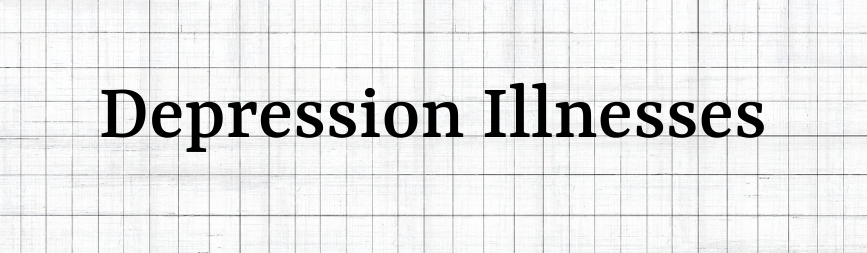
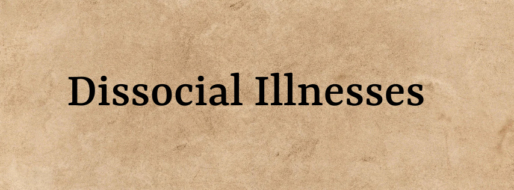

Descriptions, Symptoms, and Treatment Of Mental Health Illnesses
Anxiety Illnesses:
Generalized Anxiety Disorder - A condition where someone feels intesne extrem anxiety that intreputs everyday life.
Symptoms: Chronic anxiety, tension, restlessness, feeling on-edge, fatigued easily, having a hard time concentrating, irritability, headaches, muscle aches, stomachaches, sleep problems, and exaggerated worry while there is little reason to.
Treatment: Seeing a counselor, seeing a psychiatrist, getting prescribed medication if nesscessary, and hospitalization if an emergency.
Obsessive-Compulsive Disorder (OCD) - A condtion where someone has unartional thoughts and fears that lead to obsessive and compulsive beahvior.
Symptoms: Is recurrent, repetitive behaviors and/or unwanted thoughts that are obsessions and compulsions. Repetitive behaviors that when acted give relief temporarily. Having increased anxiety if your body deisnt repsonsd to the repetitive behavior signals it puts out.
Treatment: Seeing a counselor, seeing a psychiatrist, getting prescribed medication if nesscessary, and hospitalization if an emergency.
Panic Disorder - A condition where someone has episodes of unexpected repeated intense fear or panic.
Symptoms: Abdominal distress, chest pain, shortness of breath, heart palpitations, or dizziness.
Treatment: Seeing a counselor, seeing a psychiatrist, getting prescribed medication if nesscessary, and hospitalization if an emergency.
Post-Traumatic Stress Disorder (PTSD) - A condition where someone develops from exposure to a trautmatic experience of being threarhened and/or harmed physically.
Symptoms: Severe anxiety, nightmares, uncontrollable thoughts, and/or flashbacks.
Treatment: Seeing a counselor, seeing a psychiatrist, getting prescribed medication if nesscessary, and hospitalization if an emergency.
Social Phobia (or Social Anxiety Disorder) - A condition where someone experinces overwhelming excesive self-consciousness in social interactions.
Symptoms: Intense fear and/or worry of being judged, embarrassed, humiliated, anxiety, social isolation, sweating, palpitations, and/or concerned that they may offend someone.
Treatment: Seeing a counselor, seeing a psychiatrist, getting prescribed medication if nesscessary, and hospitalization if an emergency.

Depression Illnesses:
Major Depressive Disorder (MDD) A condition where someone feels intense sadness and lost interest in activites they enjoyed in the past. Sypmtoms: Low mood, weight loss or weight gain, lack of interest in activities that were previously enjoyable, fatigue, changes in sleep, feeling worthless, guilt, despair, having suicidal thoughts, and trouble concentrating. Treatment: Seeing a counselor, seeing a psychiatrist, getting prescribed medication if nesscessary, and hospitalization if an emergency. Dysthymia A condition where someone has milder symptoms of Major Depresssive Disorder but that last two years or longer. Symptoms: Hopelessness, indecviness, low self-esteem, irritably, low appetite, low self-essteem, low energy, insomnia, poor concentration, sadness, general discontent, anger, guilt, fatigue, excessive hunger, and/or loss of appetite. Treatment: Seeing a counselor, seeing a psychiatrist, getting prescribed medication if nesscessary, and hospitalization if an emergency. Bipolar Disorder A condition where someone experinces episodes of mood being abnormally high (mania) and episodes of mood being abnormally low. Symptoms: Loss of reality, wild ideas, pentiful energy, impulsive actions, ambitious plans, easily irritated, easily agitated and feelings of intense euphorics. Treatment: Seeing a counsleor, seeing a psychiatrist, getting prescribed medication, and/or hospitalization. Psychotic Depression A condition where someone experinces depression combined with pyshcosis. Symptoms: Hallucinations, delusions, agitation, anxiety, paranoia, confusion, disorganized thoughts, disorganised speech, problems sleeping, difficulty concentrating, suicdal thoughts, and withdrawal from social situations. Treatment: Seeing a counselor, seeing a psychiatrist, getting prescribed medication if nesscessary, and hospitalization if an emergency. Postpartum Depression A condition where that some mothers experience after giving birth to a child. It is a type of depression that happnes due to major shifts in a mothers hormonal balance of progesterone and estrgen. Symptoms: Mood swings that are intense, exhaustion, lack of energy, and sadness. Treatment: Seeing a counsleor, seeing a psychiatrist, getting prescribed medication if nesscessary, changing lifestyle patterns to help lessen symptoms, getting enough sleep, excersiesing, getting someone to take care of your child for certain periods of time, eating healthy meals regaurly, and having supportive friends and family. Seasonal Affective Disorder A condition where someone experinces depression but only during a specific time of a year. Symptoms: Depression, fatigue, social withdrawal and hoplessness. Treatment: Seeing a counselor, seeing a psyschologist, taking medication if necessary, hospitalization if needed and/or light therapy (phototherapy).
Bipolar Illnesses
Bipolar 1. A condition where someone experiences manic episodes for 7 days at least or that person experiences Biploar 1 symptoms that need hospization urgently. Symptoms: Having high energy, reduced feelings for sleep, loss of reality when in a manic mode, feeling sadness, hopelessness, loss of energy, loss of motivation, risk taking behaviors, irritability, behavior that is disorganized, agitation, aggression, crying, hyperactivity, restlessness, impulsivity, delusion, self-harm, unwanted thoughts, racing thoughts, difficulty in concentrating, false belief of superiority, paranoia, loss of weight or gain of weight and loss of pleasure in activities you usually enjoy when in a depressive mode. Treatment: Seeing a counselor, seeing a psychiatrist, getting prescribed medication if nesscessary, and hospitalization if an emergency. Bipolar 2. A condition where someone experiences emotions at extreme highs and extreme lows but not as severe as bipolar I. Symptoms: Having high energy, reduced feeling for sleep, and loss of reality when in a manic mode. feeling sadness, hopelessness, loss of energy, loss of motivation, risk taking behaviors, irritability, behavior that is disorganized, agitation, aggression, crying, hyperactivity, restlessness, impulsivity, delusion, self-harm, unwanted thoughts, racing thoughts, difficulty in concentrating, or false belief of superiority, paranoia, loss of weight or gain of weight and loss of pleasure in activities you usually enjoy when in a depressive mode. Treatment: Seeing a counselor, seeing a psychiatrist, getting prescribed medication if nesscessary, and hospitalization if an emergency. Bipolar with seasonal pattern A condition where someone exepereinces bipolar sytpoms during the same time each year repeatedly. Symptoms: Having high energy, reduced feeling for sleep, and loss of reality when in a manic mode. feeling sadness, hopelessness, loss of energy, loss of motivation, risk taking behaviors, irritability, behavior that is disorganized, agitation, aggression, crying, hyperactivity, restlessness, impulsivity, delusion, self-harm, unwanted thoughts, racing thoughts, difficulty in concentrating, or false belief of superiority, paranoia, loss of weight or gain of weight and loss of pleasure in activities you usually enjoy when in a depressive mode. Treatment: Seeing a counselor, seeing a psychiatrist, getting prescribed medication if nesscessary, and hospitalization if an emergency. Dissocial Illnesses Dissociative Amnesia A condition where someone experiences reported gaps in memory. Symptoms: Lost sense of identy, feeling disconnected from the environment around you, feeling detached from your emotions, feeling detached from yourself, identity that is blurred, distorted perception of things, distorted peroction of people, forgetting people, forgetting personal information, and foergeting events in your life. Treatment: Seeing a counselor, seeing a psychiatrist, getting prescribed medication if nesscessary, and hospitalization if an emergency. Dissociative Identity Disorder A condition where someone feels they ahvwe more than one identity and/or person in their mind. Symptoms: Impulsivity, altered consciousness, self-destructive behavior, self-harm, anxiety, feeling detached from self, mood swings, altered consciousness, depression, flashback, amnesia or blackout. Treatment: Seeing a counselor, seeing a psychiatrist, getting prescribed medication if nesscessary, and hospitalization if an emergency. Depersonalization-derealization Disorder A condotion where someone experiences feelings of seeing yourself from outside of yourself and/or feeling that the world around you isnt real. Symptoms: Your body appears distorted, shrunken, or enlarged, you feel disconnected and/or not in charge of your thoughts, feelings, body, you are numb emotionally and/or physically, you are not able to sense or response to the enirvonement around you. Treatment: Seeing a counselor, seeing a psychiatrist, getting prescribed medication if nesscessary, and hospitalization if an emergency.
Dissocial Illnesses
Dissociative Amnesia A condition where someone experiences reported gaps in memory. Symptoms: Lost sense of identy, feeling disconnected from the environment around you, feeling detached from your emotions, feeling detached from yourself, identity that is blurred, distorted perception of things, distorted peroction of people, forgetting people, forgetting personal information, and foergeting events in your life. Treatment: Seeing a counselor, seeing a psychiatrist, getting prescribed medication if nesscessary, and hospitalization if an emergency. Dissociative Identity Disorder A condition where someone feels they ahvwe more than one identity and/or person in their mind. Symptoms: Impulsivity, altered consciousness, self-destructive behavior, self-harm, anxiety, feeling detached from self, mood swings, altered consciousness, depression, flashback, amnesia or blackout. Treatment: Seeing a counselor, seeing a psychiatrist, getting prescribed medication if nesscessary, and hospitalization if an emergency. Depersonalization-derealization Disorder A condotion where someone experiences feelings of seeing yourself from outside of yourself and/or feeling that the world around you isnt real. Symptoms: Your body appears distorted, shrunken, or enlarged, you feel disconnected and/or not in charge of your thoughts, feelings, body, you are numb emotionally and/or physically, you are not able to sense or response to the enirvonement around you. Treatment: Seeing a counselor, seeing a psychiatrist, getting prescribed medication if nesscessary, and hospitalization if an emergency.
Suicide Illnesses
Egoistic Suicide A condition where someone experiences prejudice and discrimination to the point that think they are an outsider and alone. Symptoms: Suicidal thoughts, extreme feelings of loneliness, despair, hopelessness, lack of self-esteem, lack of feeling of purpose in one’s life, genetic factors, irritability, self-criticism, self-blame, poor social support, and hopelessness. Treatment: Seeing a counselor, seeing a psychiatrist, getting prescribed medication if nesscessary, and hospitalization if an emergency. Anomic Suicide A condition where someone experiences unexpected negative changes to their life. Symptoms: Suicidal thoughts, extreme feelings of stress, anxiety, lack of self-esteem, lack of a feeling of purpose in one’s life, irritability, pessimism, neuroticism, impulsivity, self-criticism, self-blame, and poor social support. Treatment: Seeing a counselor, seeing a psychiatrist, getting prescribed medication if nesscessary, and hospitalization if an emergency. Fatalistic Suicide A condition where someone experiences feeling trapped and fated to die. Symptoms: Suicidal thoughts, extreme feelings of being trapped, lack of self-esteem lack of a feeling of purpose in one’s life, irritability, pessimism, neuroticism, impulsivity, despire, and hopelessness. Treatment: Seeing a counselor, seeing a psychiatrist, getting prescribed medication if nesscessary, and hospitalization if an emergency.
Schizophrenia Illnesses
Paranoid Schizophrenia A condition where someone experiences don't know the difference between reality and not reality. Symptoms: The individual believes that someone is harassing, persecuting, chasing, following, watching, plotting against, and/or trying to be poisoned. Often by someone that is close to them such as a friend and/or family member. Treatment: Seeing a counselor, seeing a psychiatrist, getting prescribed medication if necessary, and hospitalization if an emergency. Catatonic Schizophrenia A severe rare condition where someone experiences low control of body movement and does not know the difference between reality and not reality. Symptoms: The individual may feel less control over body movement, be agitated, be immobile, sit in statuesque positions, act still and/or act mute. Treatment: Seeing a counselor, seeing a psychiatrist, getting prescribed medication if necessary, and hospitalization if an emergency. Residual Schizophrenia A condition where someone experiences milder symptoms and had at least 1 major episode of extreme symptoms of schizophrenia. Symptoms: Delusions, hallucinations, disorganized thought, behavior that is grossly disorganized behavior, reduced emotional expression, memory problems, focus problems, speaking problems, and difficulty making decisions. Treatment: Seeing a counselor, seeing a psychiatrist, getting prescribed medication if necessary, and hospitalization if an emergency. Undifferentiated Schizophrenia A condition where someone experiences symptoms of schizophrenia but is not diagnosed by the existing schizophrenia diagnosable subtypes. Symptoms: Delusions, hallucinations, disorganized thought, behavior that is grossly disorganized behavior, reduced emotional expression, memory problems, focus problems, speaking problems, and difficulty making decisions. Treatment: Seeing a counselor, seeing a psychiatrist, getting prescribed medication if necessary, and hospitalization if an emergency.